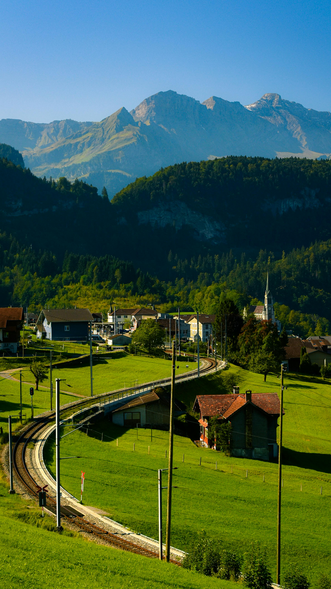

Munnar is a serene hill station in Kerala, renowned for its misty valleys, sprawling tea plantations, and rich biodiversity. Nestled at an elevation of 1,600 meters above sea level, it offers stunning landscapes and a cool climate, making it a perfect getaway for nature lovers and adventure seekers alike.
The region is also famous for its tea plantations, the endangered Nilgiri Tahr, and the unique Neelakurinji flower, which blooms every 12 years. Munnar's blend of natural beauty and cultural heritage makes it a must-visit destination in India.